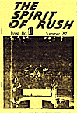
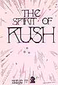
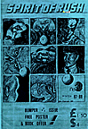
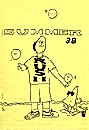
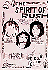
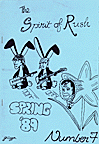
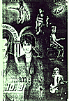
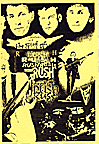
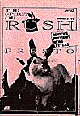

Issues 1 - 10

Issue No. 1
Summer 1987
Sounds article -- November 1976
"All The World's A Stage" press kit
"Pressure Release" by Neil Peart -- from Grace Under Pressure tourbook
Unknown Canadian magazine article -- 1978
"Looking Through Power Windows" by Neil Peart

Issue No. 2
Autumn 1987
"Innerview: In Retrospect" by Steve Adams
2112 press kit
"The Story of a Fan" by Alan Duggan
"Rush Story" by John Tobler
"Caress of Steel: An Appreciation" by Hugh Gilmour
Sounds magazine article -- September 1977
Creem magazine article -- March 1976

Issue No. 3
Winter 87/88
"Innerview" with Neil Peart -- 1980
Only Music Magazine article -- 1987
"Kubla Khan" by Samuel Taylor Coleridge
"Interview w/Alex Lifeson" -- Scotland, Sept. 1987
Article on Tai Shan
"Rockline" w/Geddy -- March 10, 1987
Fan/magazine reviews of Hold Your Fire
"Fireworks: The making of Hold Your Fire" by Neil Peart
"Interview w/Alex on Metro Radio" -- Liverpool, Sept. 1987
Issue No. 4
Spring 88
RUSH tourbooks by Geoff Sheard
Beetle '74 - Paul Sterling
Hemispheres - Sounds Review 1978
Innerview with Neil Peart 1981
Rush in concert April/May 1988 - reviews from Europe
Beetle '74 - Bob Dunne
Circus - 1/31/88

Issue No. 5
Summer 88
Hemispheres Bio by Geoff Barton
Ray Danniels interview Sprint 1980
2112 Tourbook reprint
"A Nice Morning Drive" by R.S. Foster
Moon Records/SRO Rush promos
Circus Rave from Nov. 1975
New Musical Express - March 4 1978
Rush Newsreel 1974-April 1984

Issue No. 6
December 88
Rush UK Singles Pt. 1 by Geoff Sheard
Caress of Steel Press Kit 1975
A Condensed Rush Primer by Neil Peart
Innerview Pt. 1 with Geddy Lee 1982

Issue No. 7
Spring 89
Rockline with Geddy/Alex 1989
"Aging Gracefully", Interview Jan/Feb 1989
97 Rock, Interview w/Geddy Jan. 1989
Rush UK Singles Pt. 2 by Geoff Sheard
"The Weigh-in" by Keith Sharp/Music Express Jan/1989
Innerview Pt. 2 with Geddy Lee 1982

Issue No. 8
Summer 89
Innerview with Neil Peart 1984
WPHD Interview with Geddy Nov. 1987
"Rock groups hardly satanic" by Neil Peart
"A Total Access Pass to Rush" June 1984
"Herns" Interview: Howard Ungerleider Feb. 1988

Issue No. 9
Autumn 89
Moon Records collectibles
"For Whom the Bus Rolls" by Neil Peart
"The Songs Remain the Same?" Pt.1 by Neil Elliott
Bass Player Interview: Geddy Lee - Dec. 1988
"Hemispheres" from Music Express Decebmer 1978
SymInfo Interview: Geddy Lee
Innerview with Neil Peart 1986
"The Legends of Rock" 1987

Issue No. 10
Winter 89/90
Letter from Neil Peart
SI Magazine: Alex Lifeson interview
The Canadian LP's by Keith Herbert
"Scissors, Paper, Stone" by Neil Peart
Presto reviews
"Rockline" - December 4, 1989
"The Songs Remain the Same?" Pt.2 by Neil Elliott
"For Whom the Bus Rolls" cont. by Neil Peart
"Off The Record" by Steve Adams